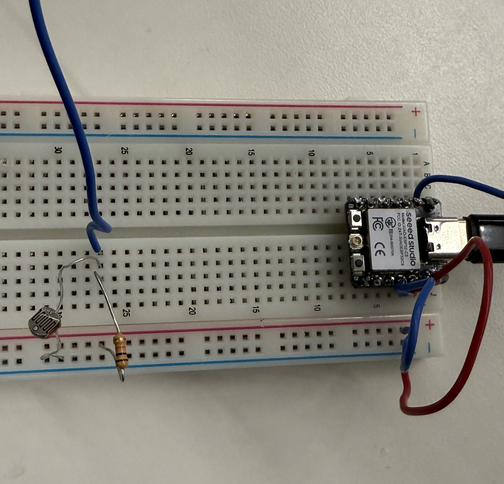
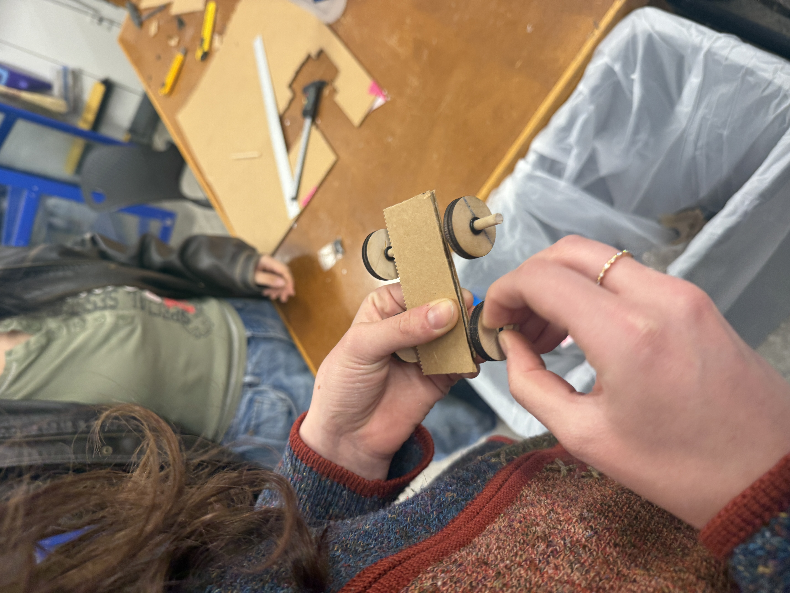
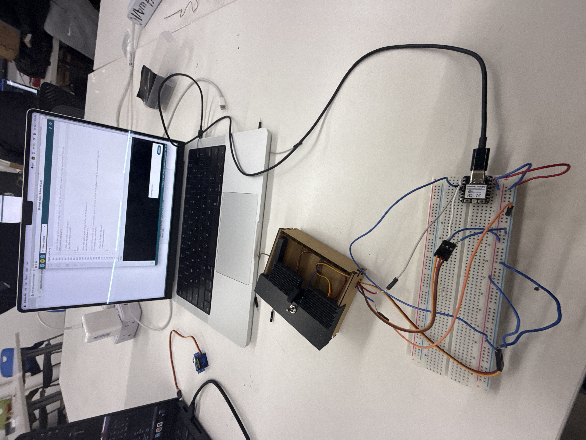
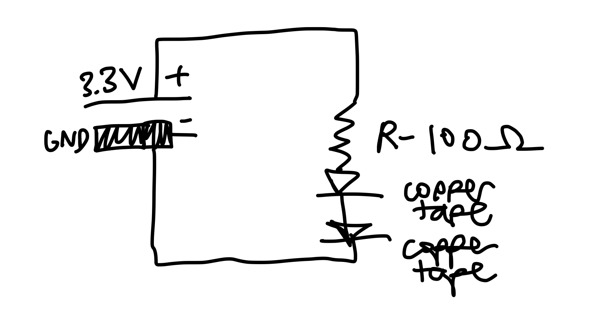
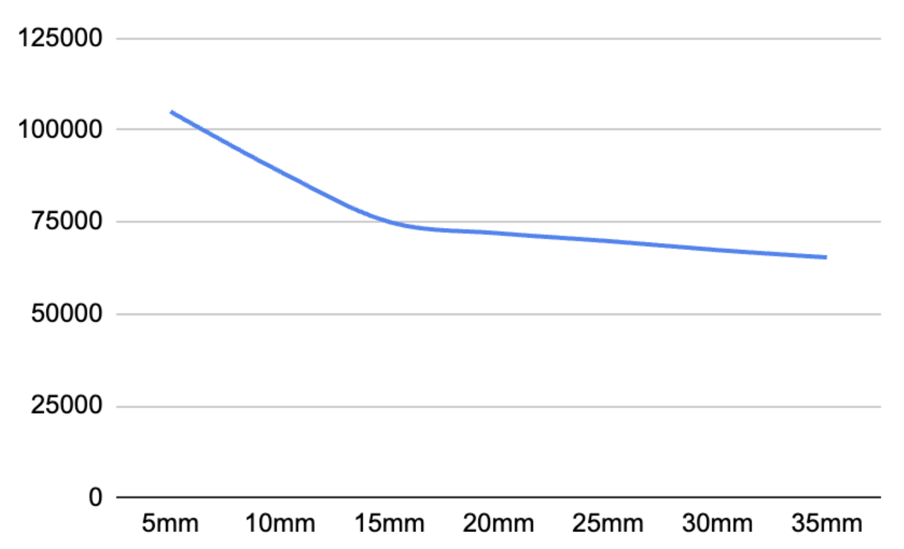
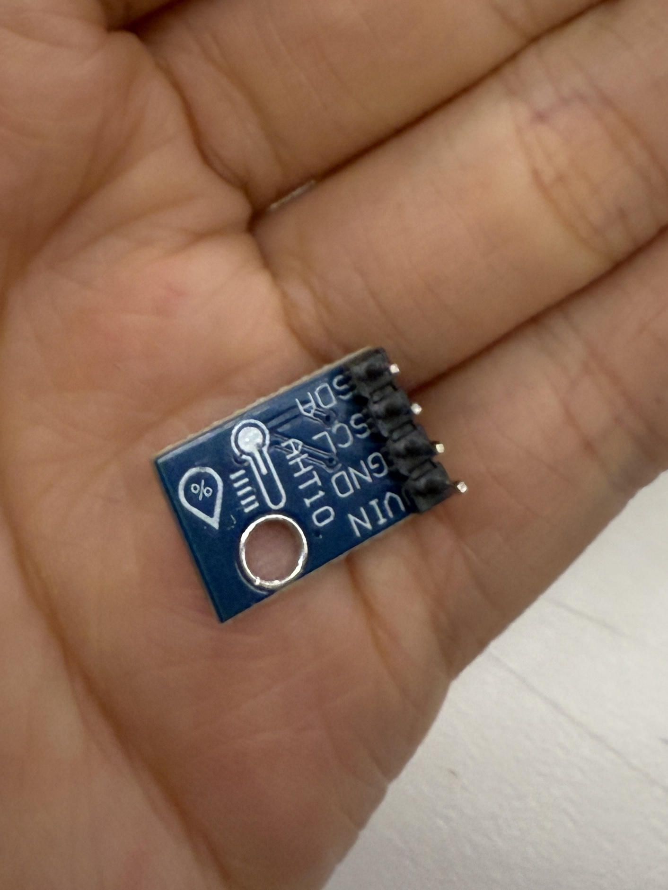
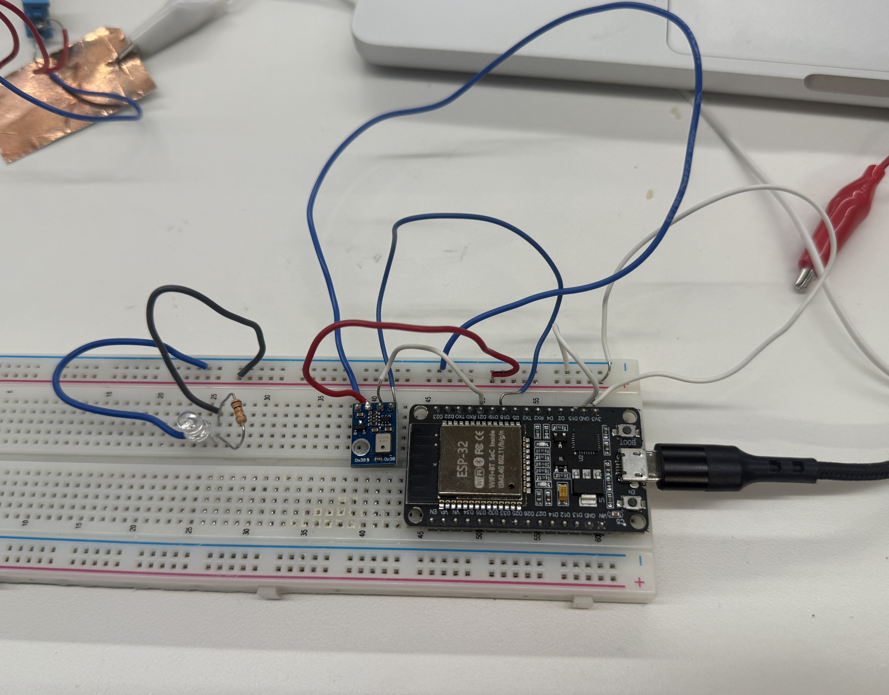
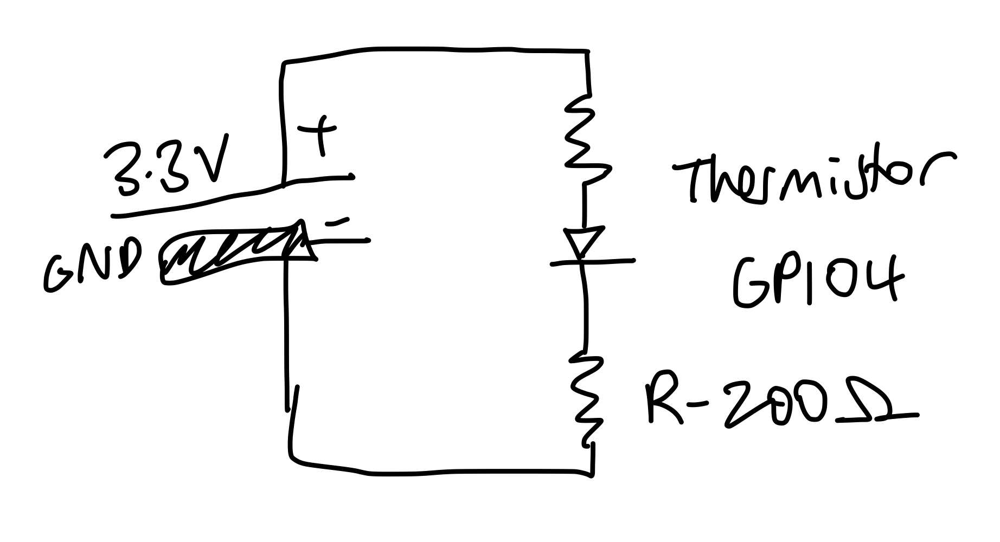
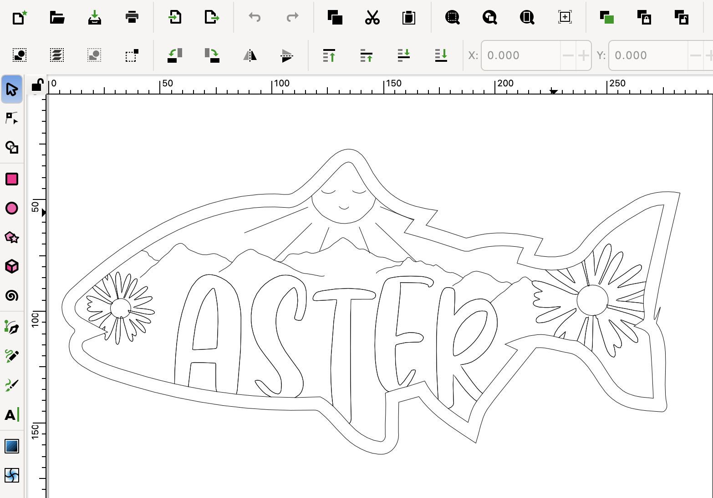

<div class="textcontainer">
<p class="margin"> </p>
<h3><a href="https://nathanmelenbrink.github.io/ps70/06_input/index.html" target="_blank" style="color:#b33b72;">Week 6:</a> Electronic Input Devices</h3>
<hr style="border: 1px solid #b33b72;">
On Tuesday, we learned about different sensors, and each table was assigned a sensor to design something with. I ended up testing out a photoresistor which detects light as its resistance decreases as light intensity increases. It worked pretty well!
<br><br>
<div style="display:flex; justify-content:center; align-items:flex-start; gap:20px;">
<figure style="display:inline-flex; flex-direction:column; align-items:center;">
<div style="display:flex;">
<p></p>
</div>
<figcaption style="font-size:15px; text-align:center;">The photoresistor on my breadboard</figcaption>
</figure>
</div>
On Thursday, we learned about capacitive sensors and were tasked to make a capacitance-based sensor. My table was supposed to make a sensor that could determine wind speed, which we tried to test by building a mini car that would have a piece of copper tape attached to it. It didn't work very well...
<br><br>
<div style="display:flex; justify-content:center; align-items:flex-start; gap:20px;">
<figure style="display:inline-flex; flex-direction:column; align-items:center;">
<div style="display:flex;">
<p></p>
</div>
<figcaption style="font-size:15px; text-align:center;">Noa trying to hot glue our car together</figcaption>
</figure>
</div>
During lab, we were supposed to finish the Useless Box, but the servos were slipping so they couldn't push the switch all the way.
<br>
<div style="display:flex; justify-content:center; align-items:flex-start; gap:20px;">
<figure style="display:inline-flex; flex-direction:column; align-items:center;">
<div style="display:flex;">
<p></p>
</div>
<figcaption style="font-size:15px; text-align:center;">Coding the Useless Box</figcaption>
</figure>
</div>
<hr style="border: 1px solid #b33b72;">
<h4>Assignment 1: Make a capacitive sensor to measure a physical quantity </h4>
The first assignment of this week was to measure a physical quantity with our microcontrollers by making a capacitive sensor. Since the wind speed capacitance-based sensor that my group tried to make during lab didn't really work, I ended up just making a distance capacitance-based sensor on my own for this assignment. First, I taped one of the copper sheets to my box so that it would be positioned vertically. Then, using a Claude-revised version of the <a href="https://nathanmelenbrink.github.io/lab/input/capacitance/capacitance.txt" target="_blank" style="color:#b33b72;">code</a> provided on the PS70 website, I found the averages of the measured serial values every 5 seconds between the first copper sheet and another copper sheet that I held vertically to it at varying distances, starting from 0.5 cm (5mm) and moving 0.5 cm (5mm) away every 5 seconds. I stopped once I reached 3.5 cm (35mm) away because it seemed that the serial values obtained after that were being randomly generated.
<div style="display:flex; justify-content:center; align-items:flex-start; gap:20px;">
<figure style="display:inline-flex; flex-direction:column; align-items:center;">
<div style="display:flex; gap:10px;">
<video style="height:30vh; width:auto;" controls>
<source src="go.MOV" type="video/mp4">
</video>
<img src="ah.JPG" style="height:30vh; width:auto;">
</div>
<figcaption style="font-size:15px; text-align:center;">Go ShopbBot Go!</figcaption>
</figure>
</div>
<div style="display:flex; justify-content:center; align-items:flex-start; gap:20px;">
<figure>
<pre style="background-color:#b33b72; color:#EEE7E8; padding:20px;
border-radius:8px; overflow-y:scroll; height:300px;
font-size:15px;margin-bottom:0;">
<code style="background-color:transparent;">long result;
int analog_pin = 13;
int tx_pin = 14;
unsigned long window_start;
long running_sum = 0;
int sample_count = 0;
const unsigned long WINDOW_MS = 5000;
void setup() {
pinMode(tx_pin, OUTPUT);
Serial.begin(9600);
window_start = millis();
}
void loop() {
result = tx_rx();
running_sum += result;
sample_count++;
if (millis() - window_start >= WINDOW_MS) {
long average = running_sum / sample_count;
Serial.print("Average over 5s (");
Serial.print(sample_count);
Serial.print(" samples): ");
Serial.println(average);
// Reset for next window
running_sum = 0;
sample_count = 0;
window_start = millis();
}
}
long tx_rx() {
int read_high;
int read_low;
int diff;
long int sum;
int N_samples = 100;
sum = 0;
for (int i = 0; i < N_samples; i++) {
digitalWrite(tx_pin, HIGH);
read_high = analogRead(analog_pin);
delayMicroseconds(100);
digitalWrite(tx_pin, LOW);
read_low = analogRead(analog_pin);
diff = read_high - read_low;
sum += diff;
}
return sum;
}
</code>
</pre>
<figcaption style="font-size:15px; text-align:center;">
Here is the code for the AHT10 sensor. (You can scroll through it)
</figcaption>
</figure>
<figure style="display:inline-flex; flex-direction:column; align-items:center;">
<div style="display:flex;">
<p></p>
</div>
<figcaption style="font-size:15px; text-align:center;">The schematic</figcaption>
</figure>
</div>
Then, we had to calibrate the sensor by plotting the points on a graph. I forgot that Arduino has the "Serial Plotter" tool which can generate a graph from the serial values obtained, so I used Google Sheets to generate my graph. Based on the graph I plotted, it seems that it had a non-linear relationship which might indicate that the sensor is more sensitive at the close range between 5-15 mm and less sensitive from 15-35mm.
<div style="display:flex; justify-content:center; align-items:flex-start; gap:20px;">
<figure style="display:inline-flex; flex-direction:column; align-items:center;">
<div style="display:flex;">
<p></p>
</div>
<figcaption style="font-size:15px; text-align:center;">Here is the graph that I generated for the distance capacitance sensor.</figcaption>
</figure>
</div>
<hr style="border: 1px solid #b33b72;">
<h4>Assignment 2: Use another sensor; Include at least one output </h4>
The second assignment of the week was to configure and use another sensor, and to include at least one output device. I initially wanted to try out the AHT10 temperature-humidity sensor because I thought it would be cool to integrate that into my final project, since my final project would be placed outside and maybe could thus measure the daily temperature and humidity and see how that affected the different birds it sees. For the assignment, I simply generated code to derive the temperature and humidity values and make it turn on the LED light on the ESP32 DevKit board when the temperature wasn't at an ideal room-temperature.
<div style="display:flex; justify-content:center; align-items:flex-start; gap:20px;">
<figure>
<pre style="background-color:#b33b72; color:#EEE7E8; padding:20px;
border-radius:8px; overflow-y:scroll; height:300px;
font-size:15px;margin-bottom:0;">
<code style="background-color:transparent;">#include <Wire.h>
#include <Adafruit_AHTX0.h>
Adafruit_AHTX0 aht;
const float ROOM_TEMP_LOW = 20.0;
const float ROOM_TEMP_HIGH = 25.0;
const float TEMP_OFFSET = 0.0;
const int LED_PIN = 2; // GPIO2 is the onboard LED on most ESP32 DevKits
const unsigned long BLINK_ON_MS = 200;
const unsigned long BLINK_OFF_MS = 800;
const unsigned long READ_INTERVAL = 2000;
bool blinkPhaseOn = false;
bool alertActive = false;
unsigned long lastBlinkTime = 0;
unsigned long lastReadTime = 0;
void setup() {
Serial.begin(115200); // ESP32 uses 115200 by default
pinMode(LED_PIN, OUTPUT);
digitalWrite(LED_PIN, LOW);
Wire.begin(18, 21); // SDA = 18, SCL = 21
if (!aht.begin()) {
Serial.println("ERROR: AHT10 not found. Check wiring.");
while (true) {
digitalWrite(LED_PIN, HIGH); delay(100);
digitalWrite(LED_PIN, LOW); delay(100);
}
}
Serial.println("AHT10 ready.");
Serial.println("timestamp_ms,temperature_c,humidity_pct,alert");
}
void loop() {
unsigned long now = millis();
if (now - lastReadTime >= READ_INTERVAL) {
lastReadTime = now;sensors_event_t humidity_event, temp_event;
aht.getEvent(&humidity_event, &temp_event);
float temp = temp_event.temperature + TEMP_OFFSET;
float hum = humidity_event.relative_humidity;
alertActive = (temp < ROOM_TEMP_LOW || temp > ROOM_TEMP_HIGH);
Serial.print(now);
Serial.print(",");
Serial.print(temp, 2);
Serial.print(",");
Serial.print(hum, 1);
Serial.print(",");
Serial.println(alertActive ? 1 : 0);
if (!alertActive) {
digitalWrite(LED_PIN, LOW);
blinkPhaseOn = false;
}
}
if (alertActive) {
unsigned long blinkDuration = blinkPhaseOn ? BLINK_ON_MS : BLINK_OFF_MS;
if (now - lastBlinkTime >= blinkDuration) {
lastBlinkTime = now;
blinkPhaseOn = !blinkPhaseOn;
digitalWrite(LED_PIN, blinkPhaseOn ? HIGH : LOW);
}
}
}
</code>
</pre>
<figcaption style="font-size:15px; text-align:center;">
Here is the code for the AHT10 sensor. (You can scroll through it)
</figcaption>
</figure>
</div>
But for some reason, it just didn't work?? I honestly still don't know what exactly went wrong, but maybe I should've changed the pins that the sensor was assigned to. My wiring was correct and my code was correct, but it might be that the DevKit wasn't correctly reading the sensor, because it just wasn't picking up any values. I checked with the multimeter, and it was receiving the correct amount of voltage.
<div style="display:flex; justify-content:center; align-items:flex-start; gap:20px;">
<figure style="display:inline-flex; flex-direction:column; align-items:center;">
<div style="display:flex;">
<p></p>
</div>
<figcaption style="font-size:15px; text-align:center;">This is what the AHT10 sensor looks like. I soldered the pins on the wrong way I think haha (but that shouldn't have been the problem)</figcaption>
</figure>
<figure style="display:inline-flex; flex-direction:column; align-items:center;">
<div style="display:flex;">
<p></p>
</div>
<figcaption style="font-size:15px; text-align:center;">Here is what the wiring looked like on the breadboard.</figcaption>
</figure>
</div>
Anyways, I couldn't figure it out and was getting sleepy so I decided to try out a different sensor. This time, I decided to try the thermistor. I remember that during lab, Lynn was testing it and it wouldn't pick up any different temperatures when she touched it, which we deduced was due to her hands being too cold?? Well, I wanted to test it out for myself. <br></br>I started off by wiring the thermistor to the breadboard and then I generated some code that would make the onboard LED turn on when it detected my body heat, which I deduced was about a 2000 difference in the ADC value.
<div style="display:flex; justify-content:center; align-items:flex-start; gap:20px;">
<figure>
<pre style="background-color:#b33b72; color:#EEE7E8; padding:20px;
border-radius:8px; overflow-y:scroll; height:300px;
font-size:15px;margin-bottom:0;">
<code style="background-color:transparent;">
const int THERMISTOR_PIN = 4;
const int LED_PIN = 2; // Built-in LED on most ESP32 dev kits
const int TOUCH_THRESHOLD = 2000; // ADC value between room temp & body temp
void setup() {
pinMode(LED_PIN, OUTPUT);
Serial.begin(115200);
analogReadResolution(12); // 12-bit ADC → values from 0 to 4095
Serial.println("Starting...");
}
int getAverageReading() {
long total = 0;
for (int i = 0; i < 10; i++) {
total += analogRead(THERMISTOR_PIN);
delay(10);
}
return total / 10;
}
void loop() {
int adcValue = getAverageReading();
Serial.print("ADC Value: ");
Serial.println(adcValue);
if (adcValue < TOUCH_THRESHOLD) {
// Cold = NOT touching → LED ON
digitalWrite(LED_PIN, HIGH);
Serial.println(">> NOT touching — LED ON");
} else {
// Warm = touching → LED OFF
digitalWrite(LED_PIN, LOW);
Serial.println(">> Touching — LED OFF");
}
delay(300);
}
</code>
</pre>
<figcaption style="font-size:15px; text-align:center;">
Here is the code for the thermistor. (You can scroll through it)
</figcaption>
</figure>
<figure style="display:inline-flex; flex-direction:column; align-items:center;">
<div style="display:flex;">
<p></p>
</div>
<figcaption style="font-size:15px; text-align:center;">The schematic</figcaption>
</figure>
</div>
Once again, I ran into trouble. After much thinking, I realized that I had to switch the pin connected to the thermistor from GPIO21 to something else (I chose GPIO4) because GPIO21 can't read analog values on the ESP32 DevKit. Thinking back, this might have been the same issue as to why I coudln't get the AHT10 sensor to work. Thankfully, after I changed that in my code, it worked!
<div style="display:flex; justify-content:center; align-items:flex-start; gap:20px;">
<figure style="display:inline-flex; flex-direction:column; align-items:center;">
<video style="height:30vh; width:auto;" controls>
<source src="yay.MOV" type="video/mp4">
</video>
<figcaption style="font-size:15px; text-align:center;">THE THERMISTOR WORKED YAYYYY! My body temperature is warm enough lol!</figcaption>
</figure>
</div>
To be very honest, I forgot to save the values that were obtained from my thermistor sensor. Thus, I was unfortunately unable to plot the points on the graph. However, I do remember that it would take a while for the sensor to warm up and cool down, so it seemed to have somewhat of a linear temperature-to-value ratio. I could also see a drastic change (2000+ value) from when I was touching the thermistor versus when it was exposed to only the room-temperature air.
<hr style="border: 1px solid #b33b72;">
<h4>Assignment 3: Prepare CAD files for CNC week </h4>
This was the most hellish assignment ever.. Basically, for CNC week, since my friend Aster's birthday was coming up, I wanted to mill her a wooden fish that had the mountains and her name carved into it. It should have been relatively easy.. or so I thought. I was able to use Adobe Photoshop to crop the mountains and her name to fit perfectly within the shape of the fish. Fun fact, I decided to use an outline of the Presidential Mountains in New Hampshire as the mountains on the fish because Aster and I are both in the Harvard Outing Club, and doing the Presidential Traverse (where you hike all of the presis at once) is somewhat of a tradition? legendary move? in the club. Moving on to the dreadful part. When I brought it over to Inkscape to obtain the bit paths, I found out that there was actually two bit paths generated for each outline, since it generated on either side of each outline. Thus, I had to go in and manually draw the paths by tracing over the original image that I had generated. I don't have a lot of screenshots documenting this process.. but just know that it was terrible haha. At least the troubles were over (OR SO I THOUGHT! SEE CNC WEEK FOR MORE OF MY WOES)
<div style="display:flex; justify-content:center; align-items:flex-start; gap:20px;">
<figure style="display:inline-flex; flex-direction:column; align-items:center;">
<div style="display:flex;">
<p></p>
</div>
<figcaption style="font-size:15px; text-align:center;">AT LAST, THE COMPLETED SVG IN INKSCAPE</figcaption>
</figure>
<figure style="display:inline-flex; flex-direction:column; align-items:center;gap:20px;">
<a id="btn" href="Aster.svg" download>Download the svg file
</a>
</figure>
</div>
</div>